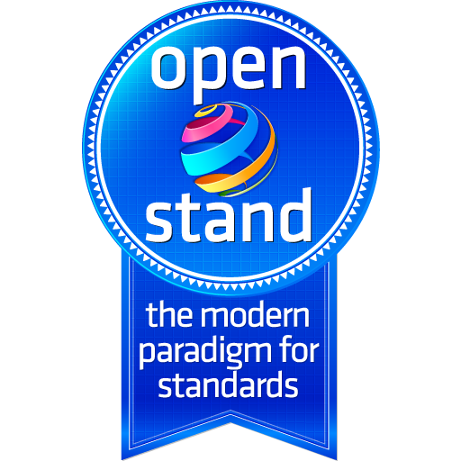

This matrix positions prominent Education Technology Standards on two dimensions. The horizontal dimension is the Four-Layer Framework for Data Standards. The vertical dimension is based on A Taxonomy of Education Standards. Positioning standards according these dimensions can help education technology vendors and consumers identify the standards that are relevant to their work.
| Standard | Standards Org | Description | Types | Data Layers | Ed Levels |
|---|---|---|---|---|---|
| {{ post.title | escape }} | {{ post.org | escape }} | {{ post.excerpt }} (more) |
{%- assign tps = post.types | split: "," -%}
{%- for type in tps -%}
{%- unless forloop.first -%} {%- endunless -%} {{ type | strip }} {%- endfor -%} |
{%- assign layers = post.datalayers | split: "," -%}
{%- for layer in layers -%}
{%- unless forloop.first -%} {%- endunless -%} {%- assign s = layer | strip -%} {%- case s -%} {%- when '1' -%}1. Data Dict {%- when '2' -%}2. Data Model {%- when '3' -%}3. Serialization {%- when '4' -%}4. Protocol {%- endcase -%} {%- endfor -%} |
{%- assign tps = post.edlevels | split: "," -%}
{%- for level in tps -%}
{%- unless forloop.first -%} {%- endunless -%} {{ level | strip }} {%- endfor -%} |
|  | The contributors to EdMatrix advocate for open-stand.org principles. |